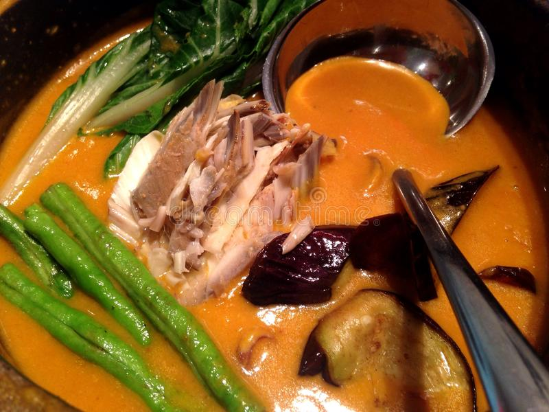

KARE-KARE RECIPE

The Kare-Kare recipe is a stew which is known for having a thick peanut sauce.
This dish is a favorite during Philippine occasions especially the feasts celebrated in every region.
No feast celebration is complete without this. Every visitor will be asking for it once they come to eat in your house.
Ingredients
- 1/4 kg beef
- 1/4 kg tripe
- 1 cup of peanut butter
- 1/4 cup grounded toasted rice
- 1/2 cup cooked Bagoong Alamang
- 1 large onion, diced
- 3 cloves of garlic, minced
- 1 tablespoon atsuete seeds
- 2 pieces eggplant, sliced 1 inch thick
- 1 bundle Bok Choy (Pechay)
- 1 bundle of String Beans
- 1 bundle of okra
- 3 tbsp. oil
- 5 cups of water
- Salt to taste
Cooking Procedure
- Boil the Beef and Tripe in water for an hour or until cooked.
- Strain and keep the stock.
- Heat oil and atsuete seeds in a pan. Removed the seeds.
- Sauté garlic, onions until golden brown.
- Add the stock, toasted rice and peanut butter. Add the beef and tripe.
- Bring to a boil and simmer for 15 minutes.
- Salt to taste.
- Add the Eggplant, String Beans, Bok Choy and Okra (If available only).
- Cook the vegetables for 5 minutes.
- Do not overcook the vegetables.
- Serve with Rice and Bagoong.